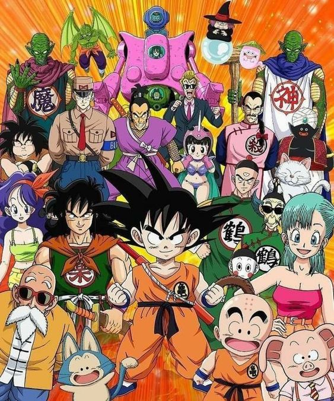

Dragon Ball é uma série de anime e mangá criada por Akira Toriyama. O Dragon Ball clássico segue as aventuras de Son Goku, um jovem guerreiro com uma cauda de macaco que vive em uma montanha. Goku encontra uma garota chamada Bulma, que está em busca das lendárias Esferas do Dragão, objetos mágicos que, quando reunidos, permitem ao seu possuidor realizar um desejo.
Juntos, Goku e Bulma embarcam em uma jornada para encontrar as Esferas do Dragão e enfrentam muitos desafios ao longo do caminho. Eles fazem novos amigos, como Mestre Kame, Kuririn e Yamcha, enquanto lutam contra vilões como o exército da Red Ribbon e o Rei Piccolo.
A série evolui à medida que Goku cresce e se torna um lutador mais forte. No final do Dragon Ball clássico, Goku compete no Torneio de Artes Marciais, onde enfrenta o vilão Piccolo Jr., um ser nascido de King Piccolo. A série termina com Goku derrotando Piccolo Jr. e casando-se com Chi-Chi.
O Dragon Ball clássico estabelece as bases para a série Dragon Ball Z, que continua a história de Goku e introduz elementos mais épicos e batalhas de nível planetário.
